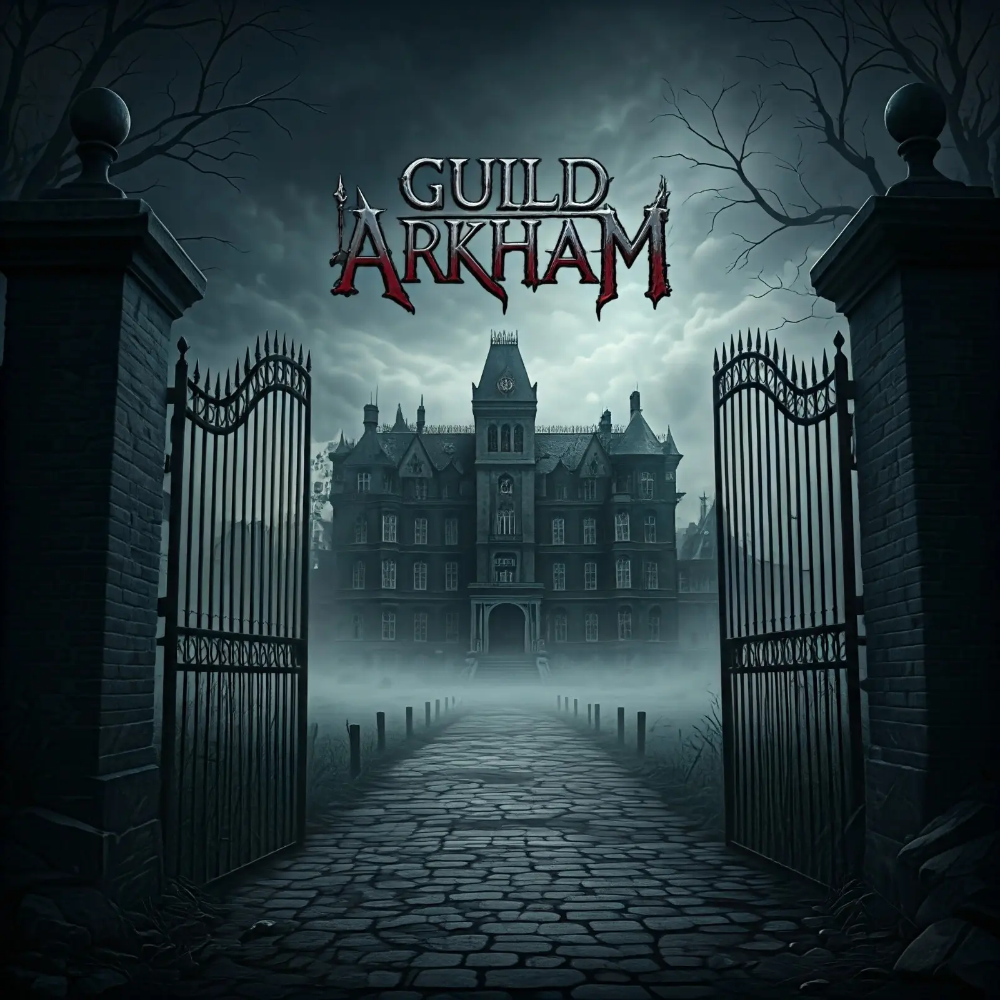

Resolução de problemas
Análise objetiva de incidentes e busca por soluções consistentes.
Analista de Sistemas Sênior com 15 anos de atuação no TRE-SC
Atuo com suporte técnico especializado, resolução de problemas, operações de TI, sistemas e atendimento a usuários no contexto do TRE-SC.
Trajetória
Minha trajetória no TRE-SC começou no atendimento e suporte N1, evoluiu para responsabilidades de N2 e hoje está concentrada em suporte técnico especializado, resolução de problemas, documentação e apoio técnico em sistemas e operações de TI.
Meu vínculo contratual atual é com a Wyntech, em prestação de serviços ao TRE-SC.
Pratica
Análise objetiva de incidentes e busca por soluções consistentes.
Atuação em demandas de maior complexidade e apoio às equipes de atendimento.
Experiência construída em um ambiente que exige continuidade e responsabilidade técnica.
Comunicação clara e foco na resolução das necessidades do usuário.
Interesse constante em tecnologia, automação e desenvolvimento de novas competências.
Contato
Para conversar sobre minha experiência profissional ou entrar em contato, este é o melhor caminho.
Pessoal
Fora do trabalho, gosto de tecnologia, desenvolvimento, jogos online e comunidades digitais. Também acompanho o universo de Poketibia, participo da Guild ARKHAM e compartilho alguns momentos em canais pessoais.

Guild ARKHAM Comunidade gamer e projeto pessoal